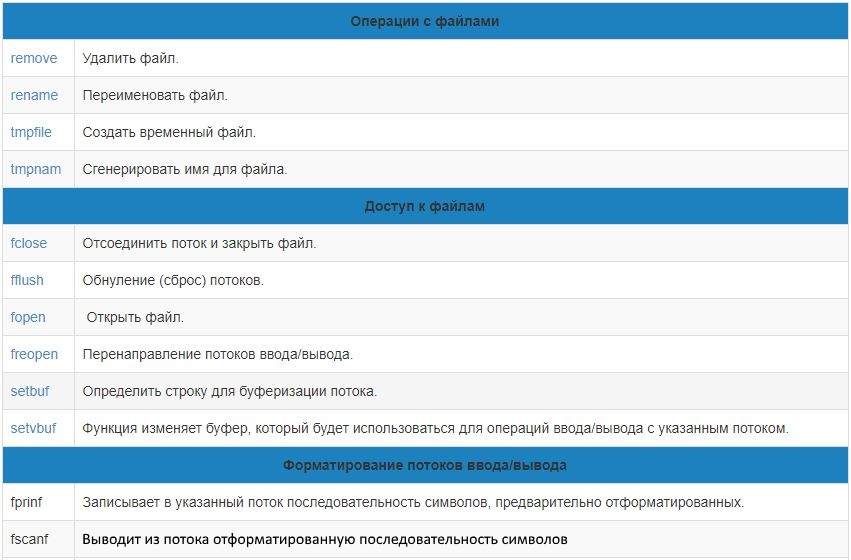

Основы алгоритмизации и программирования
Работа с файлами
Содержание лекции
Файловый ввод/вывод
Файловый ввод/вывод, как и консольный, бывает двух видов:
- Функциональный ввод/вывод (из C)
- Потоковый ввод/вывод (C++)
Файл - что за фрукт
Файл - это именованный объект, хранящий данные (программа или любая другая информация) на каком-либо носителе (винчестер, CD). Файл, как и массив, - это совокупность данных, потому они немного похожи.
Отличия файла от массива
- Файлы хранятся не в оперативной памяти, а на внутреннем или внешнем носителе (как правило)
- Файл не имеет фиксированной длины, т.е. может увеличиваться и уменьшаться сколько угодно
- Перед работой с файлом его необходимо открыть, а в конце - закрыть
Текстовые и бинарные файлы
Грубо говоря, файлы можно разделить на две категории:
- Текстовые файлы могут быть просмотрены и отредактированы с клавиатуры любым текстовым редактором и имеют простую структуру: последовательность символов.
- Бинарные файлы – это файлы, которые не имеют структуры текстовых файлов и хранят последовательность бит. Каждая программа для своих бинарных файлов определяет собственную структуру, т.е. чтение таких файлов может оказаться весьма затруднительным.
Файлы в C
Все файлы в С рассматриваются как неструктурированная последовательность байтов. Каждый файл завершается маркером конца файла (end-of-file, EOF).
Когда файл открывается, то создается программный объект и с этим объектом связывается поток. Поток – это файл вместе с предоставленными средствами буферизации. Потоки можно открывать и закрывать (связывать указатели на поток с конкретными файлами); вводить и выводить строку, символ, форматированные данные, порцию данных произвольной длины; анализировать ошибки ввода/вывода и достижения конца файла; управлять буферизацией потока и размером буфера; получать и устанавливать указатель текущей позиции в файле.
Файловый ввод/вывод С
Функции файлового ввода/вывода С содержатся в той же библиотеке, где и функции для консольного ввода/вывода - stdio.h
Также определенный набор функция для работы с файлами находится в библиотеке io.h.
Функции для работы с файлами
Функции для работы с файлами 2

Начало работы с файлом
Прежде чем начать работать с файлом, необходимо инициировать (открыть) поток. При этом поток связывается со структурой предопределенного типа FILE, который описан в библиотечном файле <stdio.h>. Объект этой структуры часто называют дескриптором файла.
В конце работы с файлом, тот же поток необходимо будет закрыть.
Открытие файла
Для открытия файла используется функция fopen.
FILE* fopen(char* filename, char* mode);
При успешном открытии возвращает указатель на структуру типа FILE - указатель на файл. Эта структура связана с физическим файлом и используется для всех последующих операций над этим файлом.
Имя файла
Первый параметр функции fopen - filename служит для передачи имени файла, например "D:\\Work\gifts\shared\нажми_меня.bat".
Замечание!
Поскольку символ обратного слеша \ в языках C/C++ используется для описания спец.символов ('\0','\n','\r'), для записи конкретно обратного слеша используется конструкция из двух знаков: \\. Это нужно учитывать при написании пути к файлу.
Режимы открытия файла
| Режим | Описание |
| "w" | Открыть файл для записи, если файл существует, то он стирается |
| "r" | Открыть файл для чтения |
| "a" | Открыть файл для добавления в конец, если файла нет, то он создается |
| "w+" | Открыть файл для записи, чтения, исправления. Если файл существует, он стирается |
| "r+" | Открыть файл для чтения и исправления, однако нельзя увеличивать размер файла |
| "a+" | Открыть файл для добавления. Как режим "w+", только существующий файл не стирается |
| "t" | Файл открывается в текстовом режиме (по умолчанию) |
| "b" | Файл открывается в бинарном режиме |
- Режимы с "w" - создается пустой новый файл. Старый удаляется.
- Режимы с "r" - индикатор позиции на начало файла, если файл не существует - неудача.
- Режимы с "a" - индикатор позиции на конец файла, если файл не существует - создается новый.
Пример открытия файла
FILE* f;
f = fopen("D:\\programs\explos\init.txt", "tr+");
FILE *fl = fopen("C:\\pagefile.sys", "bw");
Закрытие файла
После работы с файлом он должен быть закрыт. Для закрытия файла используется функция fclose
int fclose(FILE* file);
Функции fclose передается дескриптор файла, который необходимо закрыть.
Если файл не был закрыт в программном коде, система автоматически закроет его при завершении работы программы.
Закрытие всех файлов
Для закрытия всех ранее открытых файлов используется функция fcloseall
int fcloseall(void);
При успешном завершении возвращает количество закрытых потоков.
Пример обращения к файлу
FILE *fp;
if ((fp = fopen("file.txt", "w")) == NULL)
{
perror("\nОшибка при открытии файла"); // Выведет сообщение об ошибке
exit(0);
}
...
fclose(fp);
Функция перенаправления потока
Если требуется изменить режим доступа к файлу, то для этого сначала необходимо закрыть данный файл, а затем вновь его открыть, но с другими правами доступа. Для этого уже существует стандартная функция:
FILE* freopen(char* filename, char* mode, FILE* handle);
Эта функция сначала закрывает файл, связанный с дескриптором handle, а затем открывает файл с именем файла filename и правами доступа mode.
Индикатор конца файла
Структура FILE содержит индикатор конца файла, который имеет значение 0, пока конец файла не достигнут. Индикатор конца файла перепроверяется после каждой операции чтения.
Состояние конца файла можно получить используя функцию feof.
int feof(FILE *f);
Эта функция возвращает ненулевое значение, если индикатор конца файла установлен, в противном случае возвращается 0.
Чтение/запись из файла
Операции по чтению/записи данных из файла можно разделить на три группы:
- Посимвольный ввод/вывод
- Построчный ввод/вывод
- Блочный ввод/вывод
Посимвольный ввод/вывод
В функциях посимвольного ввода/вывода происходит прием одного символа (байта) из файла или передача одного символа в файл.
Функция считывания символа из файла:
int fgetc(FILE* f);
Функция записи символа в файл:
int fputc(int ch, FILE* f);
После чтения или записи данными функциями индикатор текущей позиции продвигается на следующий символ. При успешном выполнении функции возвращают код символа, иначе - EOF.
Применение посимвольных функций
FILE* out;
char str[80];
int n = 0;
out = fopen("text.txt", "w");
printf("Input a string:\n");
gets(str);
while(str[n])
{
fputc(str[n++], out); // посимвольно записываем строку в файл
}
fclose(out);
Построчный ввод/вывод
int fgets(char* str, int size, FILE* f);
Функция fgets выполняет чтение из файла f в строку str size символов. Чтение заканчивается, если встречается символ конца файла или конца строки.
int fputs(char* str, FILE* f);
Запись в файл f строки str до тех пор, пока не встретится символ '\0', который в файл не переносится и не заменяется на '\n'.
Применение построчных функций
FILE* f;
char str[80];
f = fopen("text.txt", "w");
printf("Press Ctrl+Z to exit.\n");
printf("Input a string:\n");
gets(str);
while (!feof(stdin))
{
fputs(str, f); // Записываем строку в файл
putc('\n', f); // Вручную добавляем символ конца строки
gets(str);
}
freopen("text.txt", "r", f);
if (f == NULL)
{
printf("Open file failed.\n");
exit(0);
}
while (fgets(str, 80, in)) // Чтение строк из файла
{
fputs(str, stdout); // Вывод строку на консоль
}
fclose(f);
Блочный ввод/вывод
Функции блочного ввода/вывода позволяют читать и писать в файл содержимое любой структуры.
int fread(void* p, int size, int n, FILE* f);
Функция fread считывает n блоков размера size байт каждый, из файла f в область памяти по указателю p.
int fwrite(void* p, int size, int n, FILE* f);
Функция fwrite записывает n блоков по size байт каждый, из области памяти по указателю p в файл f.
Применение блочных функций
typedef struct emp{
int code;
char name;
double salary; } W;
int n, i;
FILE* out;
W s;
out = fopen("employee.bin", "wb");
printf("Input a number of records to write:");
scanf("%d", &n);
if (n <= 0)
{
exit(0);
}
printf("Input code, name and salary.\n");
for (i = 0; i < n; ++i)
{
printf("%d> ", i + 1);
scanf("%d%s%lf", &s.code, &s.name, &s.salary);
fwrite(&s, sizeof(emp), 1, out); // Записываем в файл объект структуры emp
}
fclose(out);
FILE* in;
if (!(in = fopen("employee.bin", "rb")))
{
printf("Open file failed.\n");
exit(0);
}
int num = 1;
while (fread(&s, sizeof(W), 1, in))
{
if (feof(in))
{
break;
}
printf("\n nam &d code=%d name=%s salary=%f\n", num++, s.code, s.name. s.salary);
}
fclose(in);
Позиционирование в файле
С открытым файлом связано понятие «текущей позиции» (позиционера). Текущая позиция – номер байта, начиная с которого производится очередная операция чтения/записи.
При каждом выполнении функции чтения или записи, указатель смещается на количество прочитанных или записанных байт, то есть устанавливается сразу за прочитанным или записанным блоком данных в файле. Это так называемый последовательный доступ к данным.
Функции для взаимодействия с позицией
Текущая позиция представляется в программе переменной типа long. Для работы с ней в стандартной библиотеке имеются три функции: ftell, fseek и rewind.
Функция ftell
long ftell(FILE* fp);
Эта функция возвращает текущую позицию в файле. Если по каким-то причинам текущая позиция не определена, функция возвращает -1L.
Функция fseek
int fseek(FILE* fp, long pos, int mode);
Данная функция позволяет сдвинуть текущую позицию на pos байтов.
Третий параметр функции fseek, mode, определяет стартовую точку для изменения позиции в файле. Он может принимать три значения:
- SEEK_SET - от начала файла, pos всегда >0
- SEEK_CUR - от текущей позиции, pos >0 - вперед, <0 назад
- SEEK_ENG - от конца файла, pos всегда <0
Функция rewind
void rewind(FILE* fp);
Функция rewind просто перемещает указатель текущей позиции на начало файла.
Пример управления позицией
FILE *fl = fopen("text.txt", "ta+");
long fsize;
fseek(fl, 0L, SEEK_END); // Устанавливаем позицию на конец файла
fsize = ftell(fd); // Получаем значение текущей позиции
printf("Длина файла: %dl байт.\n", fsize);
Дополнительный функции
Существует также и другие функции для файлов, например:
int fileno(FILE* fp);
Функция fileno определяет и возвращает числовой дескриптор файла fp.
int filelength(int fd);
Функция filelength возвращает длину файла в байтах, по его числовому дескриптору fd.
int ferror(FILE* fp);
Функция ferror отслеживает появление ошибок, связанных с потоком fp.
Переименование файла
Для изменения имени файла используется функция rename из библиотеки io.h
int rename(const char* oldname, const char* newname);
В случае успешного переименования функция возвращает 0, иначе - ненулевое значение.
Удаление файла
Для удаления файла используется функция remove
int remove(const char* filename);
Если на момент удаления файл filename был открыт, то работа функции зависит от конкретной реализации.
Потоковый ввод/вывод файлов C++
Для обработки файлов в C++ должны быть включены заголовочные файлы <iostream> и <fstream>.
Файл fstream содержит определения классов:
- ifstream - класс для ввода в файл
- ofstream - класс для вывода из файла
- fstream - класс для ввода/вывода
Файлы открываются путем создания объектов этих классов потоков.
Иерархия классов ввода/вывода

Таким образом, функции-члены, операции и манипуляторы для работы с потоками, используемые для консольного ввода/вывода, могут быть также применены и к потокам файлов.
Пространство имён
При использовании поточных классов языка С++ в программе требуется использовать стандартное пространство имен (using namespace::std).
Файловый ввод/вывод организован с помощью переопределенных в поточных классах операций включения (<<) и извлечения (>>).
Состояние потока
Каждый поток имеет связанное с ним состояние. Состояния потока описываются в классе ios в виде перечисления enum:
enum io_state{
goodbit, // Нет ошибки 0x00
eofbit, // Конец файла 0x01
failbit, // Последняя операция не выполнилась 0x02
badbit, // Попытка использования недопустимой операции 0x04
hardfail // Фатальная ошибка 0x08
};
Получение состояния потока
Получить значение состояния потока можно с помощью функции int rdstate().Кроме того, проверить состояние потока можно следующими функциями:
- int bad(); - возвращает 1, если badbit или hardfail
- int eof(); - возвращает 1, если eofbit
- int fail(); - возвращает 1, если failbit, badbit или hardfail
- int good(); - возвращает 1, если goodbit
Работа с fstream
Класс fstream используется для открытия файла, чтения и записи, а также перемещения указателя позиционирования.
Чтобы начать работать с ним, нужно создать объект типа fstream:
fstream some_name;
И дальше, для открытия файла вызвать функцию open.
void fstream::open(const char* name, int mode, int p = filebuf::openprot);
Например
fstream inoutFile;
inoutFile.open(("a.txt", ios_base::out));
if (inoutFile)
{
// Работа с файлом
}
Режимы открытия файла
- ios_base::app - Дозапись в конец
- ios_base::binary - Бинарный режим
- ios_base::in - Для чтения
- ios_base::out - Для записи
- ios_base::trunc - Очистить файл
- ios_base::ate - Установить указатель позиционирования на конец файла
Для задания нескольких режимов используется оператор побитового ИЛИ (|).
Закрытие файла
Для сброса буфера потока, отсоединения потока от файла и закрытия файла используется функция:
void fstream::close();
Эту функцию необходимо явно вызвать при изменении режима работы с потоком, и в конце работы с файлом.
Позиционирование
Для позиционирования в fstream есть 4 функции:
- fstream::seekg() - установка позиции для чтения
- fstream::seekp() - установка позиции для записи
- fstream::tellg() - получение текущей позиции для чтения
- fstream::tellp() - получения текущей позиции для записи
Установка позиции
Функции позиционирования seekg и seekp имеют следующий формат:
fstream::seekg(int offset_position, ios_base::seekdir dir);
fstream::seekp(int offset_position, ios_base::seekdir dir);
Первым параметров offset_position идёт число байт, на которое нужно сдвинуть позицию.
Второй параметр dir определяет исходную точку сдвига. Может иметь одно из 3 значений:
- ios_base::beg - от начала файла
- ios_base::cur - от текущей позиции
- ios_base::end - от конца файла
Получение позиций
Получение позиций чтения и записи осуществляется при помощи функций tellg и tellp соответственно.
int fstream::tellg();
int fstream::tellp();
Пример
#include <fstream>
#include <iostream>
int main()
{
using namespace std;
char p[100];
fstream file;
// Создание двунаправленного потока
file.open("a.txt", ios_base::in | ios_base::out | ios_base::trunc);
file << "This is string" << endl; // Вывод в файл
// Установка позиции на начало
file.seekg(0, ios_base::beg);
// Чтение строки из файла
file.getline(p, 50);
file.seekg(0, ios_base::beg);
// Вывод содержимого потока на экран
cout << endl << file.rdbuf();
inout.close(); // Закрыть поток
}
Работа с ofsteram
Если файл будет использоваться только для записи, лучше использовать ofstream.
ofstream outfile("copy.out", ios_base::out);
ofstream outfile3("copy.out"); // Одно и то же
Функции записи через ofstream
Для записи одного символа в поток есть функция:
ofstream& ofstream::put(char symb);
Для записи строки, как массива символов, существует функция:
ofstream& ofstream::write(const char* buffer, int size);
Пример использования ofstream
#include <fstream>
int main()
{
ofstream out; // Создаём объект типа ofstream
out.open("a.txt"); // Открытие файла
if (out == nullptr) // Если файл не удалось открыть
{
return 0;
}
for (int i = 0; i < 2; ++i)
{
out << "string" << i << endl; // Вывод в файл
}
out.close(); // Закрытие файла
}
Работа с ifsteram
Если файл будет использоваться только для чтения, лучше использовать ifstream.
Функции ifstream
Для считывания строки:
ifstream& ifstream::getline(char* buffer, int size, char delimiter='\n');
Для считывания определённого количества символов:
ifstream& ifstream::read(char* buffer, int size);
Пример работы с ifstream
#include <ifstream>
int main()
{
ifstream in; // Создаём объект типа ifstream
char c;
in.open("C:\\b.txt"); // Открытие файла
while (!in.eof()) // Пока не конец файла
{
c = in.peek(); // Считываем символ из файла без смещения позиции
if (c == 'A') // Если символ A
{
in.seekg(in.tellg() + 1); // Передвигаем позиционер на один
continue;
}
in.get(c); // Считывание одного символа
cout << c;
}
in.close(); // Закрытие файла
}